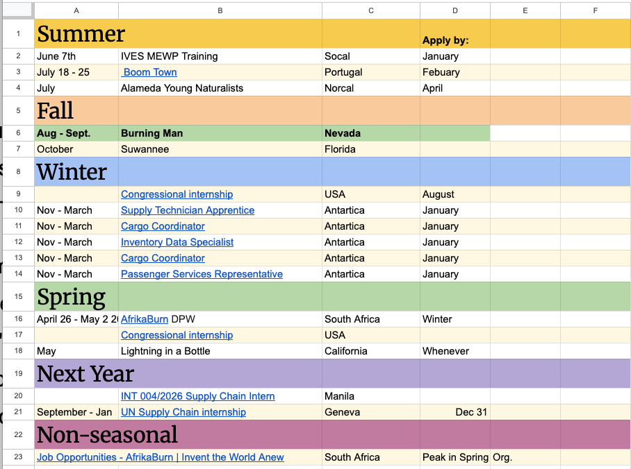
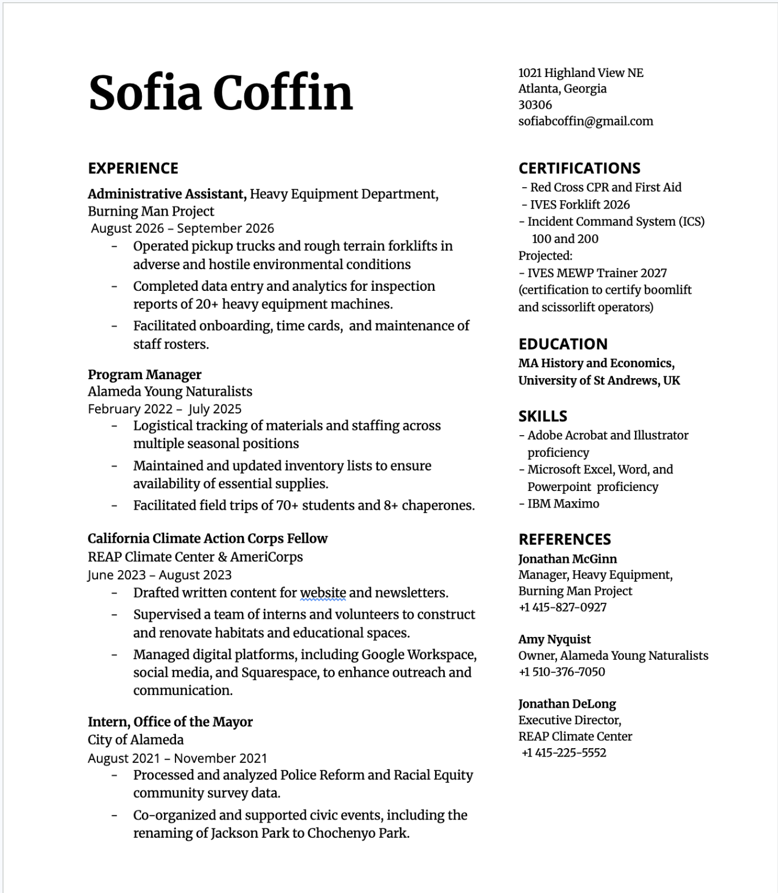
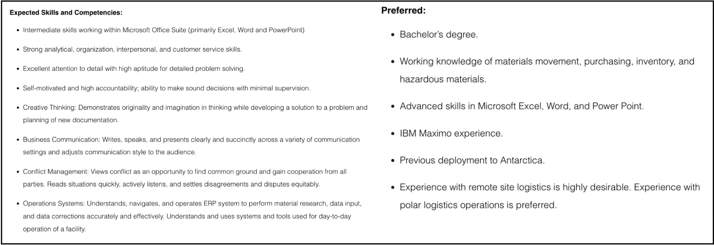

Career Pathway
Changing Trajectory
Prior to my work placement, I was situating myself within a rigid work environment. I aspired to get into the US Foreign Service as a long-term, or life-time position. My placement as an administrative assistant within the temporary environment of the Burning Man Project constituted my first experience with a “boundaryless career”, as coined by Micheal Arthur in 1994.
From my placement and the reflexive strategies taught within the module, my career trajectory shifted from viewing a career as an arrow shot from a bow to being more akin to a shotgun. Rather than treating the Foreign Service as a fixed destination, as I originally did, I am treating it as one possible long-term destination that can be informed and strengthened by a broader range of experiences.
I had perceived career development as a linear process, however, being in an environment where professional identity, skills and opportunities are constantly being renegotiated allowed me to take a more holistic view.
A Temporary Environment
Summer internships lead to new and unexpected surroundings. My work placement served as perhaps an extreme example. I spent 6 weeks in the isolated Black Rock Desert experiencing new models of work-life balance and definitions of success.
Burning Man operates within temporary organizational structures, providing opportunities for people to rise through the ranks. Competency is based largely on transfer of previous skills and the ability to quickly utilize new ones, as well as through ability to fit into a community. The inherent temporary nature of the organization allowed me to meet people who engaged with radically different styles of career than I had been exposed to.
It was exciting, and engaged with my desire to try positions without expectation of loyalty to a firm. Arthur's boundaryless career framework helped me interpret these experiences as an alternative model of professional development, rather than simply a departure from conventional employment. Through networking with other employees within my workplace, I was forced to re-evaluate what a ‘career’ really meant.
Different Options
I still see the foreign service as a goal for the future, but it’s perhaps more attainable in a long-term sense. I’ve compiled a schedule of seasonal/temporary positions to apply to for the year immediately after graduation (Artefact 1). It is representative of the most tangible change in my thinking. Instead of organising my professional development around a single institutional destination, as I did at the beginning of this module, I mapped several potential employment opportunities, including seasonal work, logistics and international organisations. I am applying to multiple options each season. I’m quite keen on the idea of using these positions to explore different countries and continents, such as South Africa, Portugal, and Antarctica.
Instead of organising my professional development around a single institutional destination, as I did at the beginning of this module, I mapped several potential employment opportunities, including seasonal work, logistics and international organisations. Arthur's conception of the boundaryless career gave me a lens to understand that professional development is not necessarily confined to progression within one organisation, but can emerge through accumulated experiences across organisational boundaries.

Discovering What I Find Rewarding
Beyond changing my understanding of career progression, the placement also changed my understanding of the work I find professionally rewarding. Through my work with the Heavy Equipment and Transportation Department, I was able to appreciate how operational infrastructure enables organisations to fulfil wider objectives.
This developed my commercial awareness and introduced me to the interconnected nature of organisational operations. I began to recognise that I was particularly interested in the systems underpinning organisational activity, rather than exclusively the central mission of an organisation itself.
Through supply-chain management and international operations, I can deploy my learned skills and capabilities supporting organizations aligning with my broader interests in public service.
Developing a Broader Skill Set
My hope is that through these rapid positions, I am able to develop my resilience, management, and decision-making skills, as well as gain a wider view of industries and systems. I may even find a niche to occupy, making me more valuable for the foreign service, if I do eventually want to pursue it.
At the moment, my desired pathway involves another season with the Burning Man Project. I’m hoping that by being proactive, I can take on more responsibility. I’ve petitioned for a course that would enable me to certify Scissorlift handling in others.
I understand that that skill might not appear to link to my career desires, but based on Amanda Goodall’s Theory of Expert Leadership, through doing physical and manual work I am preparing myself to be a better leader within physical fields.
Following that, I have applied to work as a Supply Chains Administrative Assistant at the McMurdo Research Base on the South Pole. If I enjoy supply chain work, I am considering applying to a Masters at University of London in Supply Chains and Logistics.
I’ll have to see what happens, and how my goals shift over time, but as global warming disrupts global transit, it becomes an increasingly attainable and valuable pathway. Through my experience and further education within supply chains as a niche, I could see the possibility of working for the UN and international aid-based NGO’s.
Applying My Experience
The experience that I gained in my placement is highly relevant to my top-choice position at the Antarctic McMurdo research base. Artefact 2 lists requirements for the position, Artefact 3 is my CV. With the experience I gained with machinery and tracking systems, and the analytical skills I’ve acquired in my degree at the University of St Andrews, I think I may have acquired the skills necessary to start in the position.


Conclusion
My work placement with the Burning Man Project expanded my understanding of what a career pathway could look like. Rather than the fixed and disciplined career ladder I previously conceived, I began to see a career as the accumulation of experience along a trajectory.
One day, I might want to settle down and raise a family. I am going to want to live near my parents when they’re older. This transitory employment period as a chance to be exploratory in my early-20’s and gain adequate experience to enter a more geographically-stable career at a later date.
I no longer see my career as a destination to be reached, but as a trajectory to be constructed. Entry into the foreign service remains a goal of mine, but it is one of many.
Cited:
Arthur, Micheal. The Boundaryless Career. Edited by Denise M Rousseau. Oxford University PressNew York, NY, 1996.
Goodall, Amanda H. “A Theory of Expert Leadership.” No. 2066989. 2012. SSRN (2066989). https://doi.org/10.2139/ssrn.2066989.